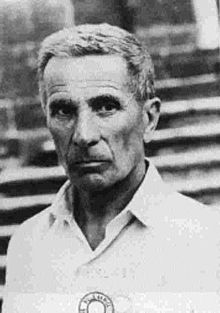

Дино Буцати
је био прозни писац, новинар, песник, драматург, аутор либерта за опере и сликар.
Од 1928. године радио је као новинар у листу Коријере дела сера.Био је специјални извештач и ратник дописник
за време Другог светског рата
Планине, пустиња, град никада нису реални него симболична, алегоријска места до којих води много путева, повезују их разни правци.
Умро је од канцера 28. јануара 1972. године.
Говори се да је писац абсурда. Његова дела богата су имагинацијом Машта његових ликова води од конкретног до апстрактног, од реалног до надреалног, до пројектованог Мајстор је писања кратких прича. Имао је склоност ка фантастици. Оригиланан је. Сцене су му метафоричче, са богатим поређењима и сликама, потенцирајући тајанственост. Има широку перспективу. Ствара посебну атмосферу магичним пристуством ствари, зачараним призорима, немиром и стрепњом. Главна лица Буцатијевих прича и романа имају опсесивне мисли о реалности, пуне су непревидљивих могућности. Прелаз са рационалног на фанатастику, при ћему се замишљено укључује у реалност основна је идеја целокупног Буцатијевог ствралаштва.
Прво књижевно дело му је кратки роман Горштак Барнабо 1933. "Татарска пустиња" се сматра његовим најзначајним делом, а за многобројне кратке приче је добио више престижних награда
| Романи | |
|---|---|
| Назив дела/td> | Објављено |
| "Горштак Барнабо" | 1933. |
| "Тајна старе шуме" | 1935. |
| "Татарска пустиња" | 1940. |
| "Велики портрет" | 1963. |
| "Једина љубав" | 1963. |
| Збирке приповедака | |
| "Тачно у том тренутку" | 1943. |
| "Пад Баливерне" | 1957. |
| "Шездест прича" | 1958. |
| "Продавница тајни" | 1968. |
Почетак странице